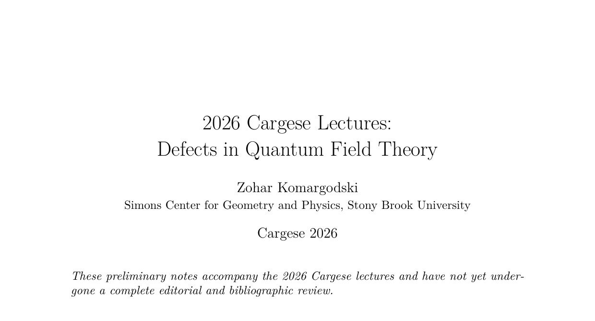
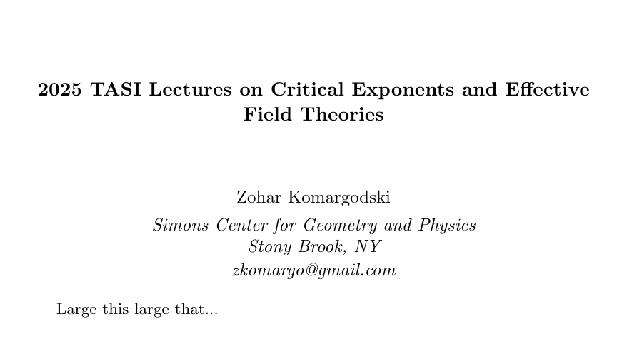
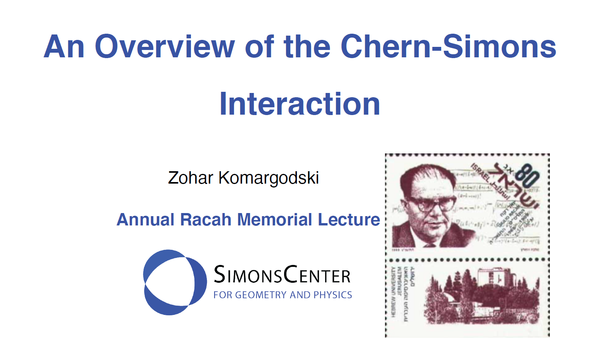
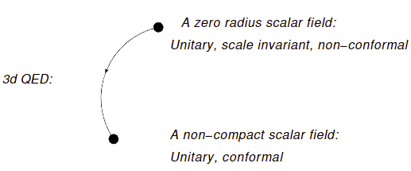

Defects in Quantum Field Theory
Topological and conformal defects, defect RG flows, magnetic impurities, Wilson and ’t Hooft lines, and crystalline flux defects.
My interests center on quantum field theory and its applications across statistical mechanics, condensed matter, and string theory.
Professor at the
Simons Center for Geometry and Physics
Stony Brook University, New York

Lectures & notes
Lecture slides and longer-form notes for students and researchers. The complete research record is available through INSPIRE-HEP.

Topological and conformal defects, defect RG flows, magnetic impurities, Wilson and ’t Hooft lines, and crystalline flux defects.

Large-charge and large-spin methods for conformal field theories, from superfluids and vortices to heavy operators and Regge physics.
Open PDF
A broad introduction to the Chern-Simons interaction and its role across quantum field theory.
Open PDF
Zero-temperature entropy for impurities and its evolution under renormalization group flow.
Open PDF
An entropy function, conformality, and symmetries in the study of line defects.
Open PDF
Topics in conformal field theory, anomalies, monotonicity theorems, supersymmetry, and S-matrix theory.
Open PDFCurriculum vitae
Education at Tel Aviv University and the Weizmann Institute, followed by the Institute for Advanced Study and faculty positions at Weizmann and the Simons Center.
Download full CV PDF updated June 2024Some awards
Contact
Simons Center for Geometry and Physics
Stony Brook University, New York